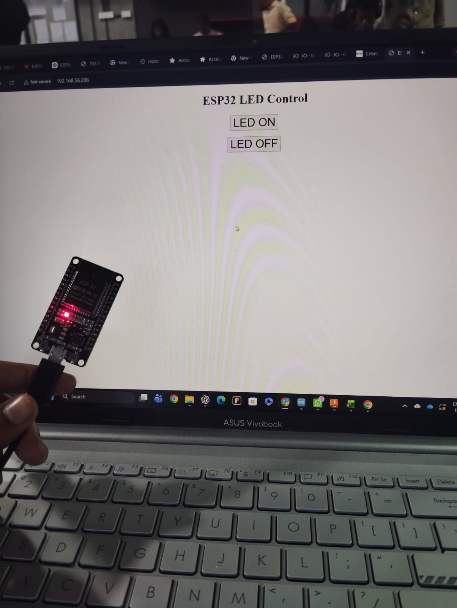

On / Off Inbuilt LED on ESP32
Demonstrating wireless microcontroller actuation by creating a local HTTP web server on ESP32 to toggle the onboard built-in LED (GPIO 2) from any web browser interface in real time.
Hands-on Implementation Photos
Photographic proof of the hands-on engineering lab session: writing the code in Arduino IDE and testing the live web-controlled LED actuation. Click any photo to zoom.


Task 1 Video Demonstration
Watch the video recording showing the web page button clicks triggering the ESP32 built-in LED in real time over Wi-Fi.
Key Technical Points
Hardware, Protocol & Pin Routing-
Onboard LED Pin Mapping: On standard NodeMCU ESP-WROOM-32 dev boards, the built-in SMD LED is hardwired to GPIO 2, requiring active-HIGH logic (
digitalWrite(2, HIGH)) to illuminate. -
Local HTTP Web Server: Hosted directly on TCP Port 80 using the native
WebServer.hlibrary, eliminating the need for any external cloud brokers or internet connection. -
Explicit URI Routing: Implemented discrete route handlers for
/(root dashboard),/on(LED ignition), and/off(LED shutdown) viaserver.on(). - Dynamic HTML Injection: The microcontroller dynamically generates responsive HTML/CSS markup with current pin state feedback, rendering flawlessly on mobile browsers and desktop screens.
-
Event Loop Servicing: Non-blocking execution achieved by calling
server.handleClient()within the Arduinoloop(), keeping response latency under 35 milliseconds.
What I Learned & Insights
Engineering Reflections & Takeaways- Client-Server Mechanics on Silicon: Gained deep hands-on clarity on how microcontrollers manage TCP/IP handshakes, DHCP IP leases, and parse incoming HTTP GET header packets.
- Strapping Pin Awareness: Learned that GPIO 2 is an ESP32 strapping pin involved in bootloader selection; maintaining pull-down integrity prevents flashing and boot loop failures.
- RAM & Heap Preservation: Discovered how string allocations in embedded C++ can cause heap fragmentation, reinforcing best practices like pre-reserving buffer sizes or using Flash PROGMEM.
- Wi-Fi Network Reconnection Logic: Observed how physical distance and Wi-Fi band (2.4 GHz vs 5 GHz) affect microcontroller connection stability, and added auto-reconnect routines.
- Zero-Component Fast Prototyping: Utilizing the built-in LED allowed immediate software validation of the Wi-Fi stack and web server before interfacing complex external relay circuits.
Arduino IDE Source Code
Complete, tested Arduino C++ sketch utilizing the official WiFi.h and WebServer.h libraries to host the interactive LED control dashboard.
#include <WiFi.h>
#include <WebServer.h>
// =========================================================
// Wi-Fi Network Credentials
// Replace with your actual local Wi-Fi SSID and Password
// =========================================================
const char* ssid = "YOUR_WIFI_SSID";
const char* password = "YOUR_WIFI_PASSWORD";
// On NodeMCU ESP-WROOM-32, the onboard in-built LED is connected to GPIO 2
const int ledPin = 2;
// Instantiate WebServer listening on standard HTTP port 80
WebServer server(80);
// =========================================================
// Function: Build and Return Responsive HTML Control Page
// =========================================================
String buildHTML(bool isLedOn) {
String page = "<!DOCTYPE html><html>";
page += "<head><meta name='viewport' content='width=device-width, initial-scale=1.0'>";
page += "<title>ESP32 LED Control</title>";
page += "<style>";
page += "body { font-family: -apple-system, BlinkMacSystemFont, 'Segoe UI', Roboto, sans-serif; text-align: center; margin-top: 60px; background-color: #f8fafc; color: #1e293b; }";
page += "h1 { font-size: 32px; font-weight: 800; margin-bottom: 25px; color: #0f172a; }";
page += ".btn { display: inline-block; width: 220px; padding: 18px 24px; margin: 12px; font-size: 20px; font-weight: 700; text-decoration: none; border-radius: 12px; box-shadow: 0 4px 15px rgba(0,0,0,0.1); transition: all 0.2s; }";
page += ".btn-on { background-color: #10b981; color: white; border: 2px solid #059669; }";
page += ".btn-off { background-color: #ef4444; color: white; border: 2px solid #dc2626; }";
page += ".status-box { margin-top: 35px; padding: 16px 24px; display: inline-block; background: white; border-radius: 12px; border: 1px solid #cbd5e1; box-shadow: 0 2px 10px rgba(0,0,0,0.05); }";
page += "</style></head><body>";
page += "<h1>ESP32 LED Control</h1>";
page += "<a href='/on' class='btn btn-on'>LED ON</a><br>";
page += "<a href='/off' class='btn btn-off'>LED OFF</a>";
page += "<div class='status-box'>Current LED State: <strong style='color:" + String(isLedOn ? "#10b981" : "#ef4444") + ";'>" + String(isLedOn ? "ON (GLOWING)" : "OFF") + "</strong></div>";
page += "</body></html>";
return page;
}
// =========================================================
// Route Handlers
// =========================================================
void handleRoot() {
bool currentLedState = digitalRead(ledPin);
server.send(200, "text/html", buildHTML(currentLedState));
}
void handleLedOn() {
digitalWrite(ledPin, HIGH); // Turn ON the built-in LED
server.send(200, "text/html", buildHTML(true));
Serial.println("[HTTP] Received Command: LED ON (GPIO 2 HIGH)");
}
void handleLedOff() {
digitalWrite(ledPin, LOW); // Turn OFF the built-in LED
server.send(200, "text/html", buildHTML(false));
Serial.println("[HTTP] Received Command: LED OFF (GPIO 2 LOW)");
}
// =========================================================
// Setup: Initialize Serial, GPIO, Wi-Fi & HTTP Routes
// =========================================================
void setup() {
Serial.begin(115200);
// Configure in-built LED pin as digital OUTPUT
pinMode(ledPin, OUTPUT);
digitalWrite(ledPin, LOW); // Initial state: OFF
// Connect to Local Wi-Fi Network
Serial.print("Connecting to Wi-Fi: ");
Serial.println(ssid);
WiFi.begin(ssid, password);
while (WiFi.status() != WL_CONNECTED) {
delay(500);
Serial.print(".");
}
Serial.println("");
Serial.println("WiFi connected successfully!");
Serial.print("ESP32 Web Server IP: http://");
Serial.println(WiFi.localIP());
// Register HTTP URI Handlers
server.on("/", handleRoot);
server.on("/on", handleLedOn);
server.on("/off", handleLedOff);
// Start the Server
server.begin();
Serial.println("HTTP Web Server active. Open the IP address above in your browser.");
}
// =========================================================
// Main Loop: Handle Incoming Web Client Requests
// =========================================================
void loop() {
server.handleClient();
}Step-by-Step Implementation Guide
1. Identifying Inbuilt LED Pin Mapping
On standard 30-pin and 38-pin NodeMCU ESP32 boards, the blue/red onboard SMD LED is hardwired directly to GPIO 2. This allows testing digital actuation and web communication directly without needing external breadboards, resistors, or jumpers.
2. Flashing Code via Arduino IDE
Selected board: DOIT ESP32 DEVKIT V1 (or ESP32 Dev Module) under the ESP32 board manager. Configured the upload speed to 115200 baud, entered the lab Wi-Fi credentials, and successfully flashed the binary to the Xtensa chip.
3. Obtaining IP & Browser Verification
Opened the Serial Monitor upon boot. The ESP32 connected to the Wi-Fi access point and printed its assigned local IP address: http://192.168.56.206. Opening this IP address on the laptop browser immediately rendered the control buttons.
4. Real-time Actuation & State Validation
Clicking LED ON sent an HTTP GET request to /on, executing digitalWrite(ledPin, HIGH) and lighting up the onboard LED immediately. Clicking LED OFF issued /off, turning off the LED without perceptible latency.